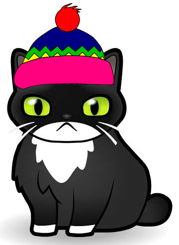

Sass for Developers
Sass...!?
Sass is a CSS preprocessor.
Sass:
Syntactically Awesome Style Sheets:
Sass is the most mature, stable, and powerful professional grade CSS extension language in the world. sass-lang.com
Yes, You Can Program in CSS!
But first, let's talk about basics.
A Quick Intro to Sass
- Syntax
- Variables
- Variable Abstraction
- Nesting
- Ampersands
- Selector Inheritance & @extend
- Placeholder Selectors
- Partials & @import
- Mixins & @include
Syntax
.sass
#sidebar
width: 30%
background-color: #faa
.scss
#sidebar {
width: 30%;
background-color: #faa;
}
- scss vs. sass
More Resources:
Variables
Placeholders for values used multiple times.
.scss
$open-sans-stack: 'Open Sans', Arial, Helvetica, sans-serif;
$pink: #c69;
body {
font-family: $open-sans-stack;
}
h2 {
color: $pink;
}
.css output
body {
font-family: "Open Sans", sans-serif;
}
h2 {
color: #c69;
}
- Thoughtbot on Sass Variables
More Resources:
Variable Abstraction
Variables should be abstracted into themes.
.scss
//VARIABLES
$open-sans-stack: 'Open Sans', Arial, Helvetica, sans-serif;
$pink: #c69;
// THEME
$font--copy: $open-sans-stack;
$header--color: $pink;
body {
font-family: $open-sans-stack;
}
h2 {
color: $header--color;
}
.css output
body {
font-family: "Open Sans", sans-serif;
}
h2 {
color: #c69;
}
Nesting
Nesting allows you to organize your code in relevant chunks
.scss
.sidebar {
float: left;
h2 {
font-size: 1.2em;
}
}
.css output
.sidebar {
float: left;
}
.sidebar h2 {
font-size: 1.2em;
}
A word on Nesting
- Never go more than 3 levels deep
- Nesting with an
&is a-okay
When Nesting Goes Wrong
Do not do this.
.scss
body {
sidebar {
.news-section {
.description {
a {
color: #f00;
}
}
}
}
}
.css output
body sidebar .news-section .description a {
color: #f00;
}
Yay Nesting!
.scss
$blue: #00f;
.blue-link {
color: $blue;
&:hover,
&:focus {
color: mix($blue, white, 50%);
}
}
.css output
.blue-link {
color: #00f;
}
.blue-link:hover, .blue-link:focus {
color: #7f7fff;
}
The almighty ampersand
- Great for BEM, SMACSS & other syntax methodologies
- No long selectors!
- BEM documentation
- SMACSS documentation
- Slides on Object Oriented Sass
More Resources:
@extend (Selector Inheritance)
Extending will append the element to recieve the style block.
.scss
.kitten {
background-image: url("../img/kitten.png");
}
.kitten-with-hat {
@extend .kitten;
&:after {
content: " ";
background-image: url("../img/hat.png");
}
}
.css output
.kitten, .kitten-with-hat {
background-image: url("../img/kitten.png");
}
.kitten-with-hat:after {
content: " ";
background-image: url("../img/hat.png");
}
.kitten
.kitten-with-hat

Placeholder Selectors
Placeholders are "invisible" until extended
.scss
$pink: #c69;
$blue: #00f;
// I'm not real yet
%link {
text-decoration: none;
font-weight: 300;
}
.pink-link {
@extend %link; //extending
color: $pink;
}
.blue-link {
@extend %link; //extending
color: #00f;
}
.css output
.pink-link, .blue-link {
text-decoration: none;
font-weight: 300;
}
.pink-link {
color: #c69;
}
.blue-link {
color: #00f;
}
Partials & @import
Sass files are split into "partials" for better organization.
Manifest File (main.scss)
@import "vendors/bootstrap";
@import "vendors/jquery-ui";
@import "utils/variables";
@import "utils/functions";
@import "utils/mixins";
@import "utils/placeholders";
@import "base/reset";
@import "base/typography";
@import "layout/navigation";
@import "layout/grid";
@import "layout/header";
@import "layout/footer";
@import "layout/sidebar";
@import "layout/forms";
@import "components/buttons";
@import "components/carousel";
@import "components/cover";
@import "components/dropdown";
@import "pages/home";
@import "pages/contact";
@import "themes/theme";
@import "themes/admin";
- Sass Director
- Wrangling Sass @import files
More Resources:
Mixins & @include
Mixins are blocks of code you @include. We'll get fancier with them later.
.scss
@mixin center-block {
display: block;
margin-left: auto;
margin-right: auto;
}
.nyan-cat {
width: 450px;
@include center-block;
}
.css output
.nyan-cat {
width: 450px;
display: block;
margin-left: auto;
margin-right: auto;
}
- Handy Sass Mixins
More Resources:
Control Directives
- Lists
- List Functions
- Maps
- @each loop
- @for loop
- @while loop
Lists
$social-icons: twitter, facebook, instagram, dribbble;List Functions
- length($list):
- returns the length of a $list (if not a list, returns 1).
- nth($list, $index):
- returns the value at $index position in $list (throw an error if index out of list range).
- index($list, $value):
- returns the first index of the searched for $value in $list (false if not found).
- append($list, $value[, $separator]):
- appends $value to the end of $list using $separator as a separator (using the current one if not specified).
- join($list-1, $list-2[, $separator]):
- appends $list-2 to $list-1 using $separator as a separator (using the one from the first list if not specified).
- zip(*$lists):
- combines several list into a comma-separated list where the nth value is a space-separated lists of all source lists nth values. In case source lists are not all the same length, the result list will be the length of the shortest one.
- Understanding Sass Lists
- Advanced Sass List Functions
More Resources:
Lists in Action
Note: Sass Lists start at 1, not 0.
.scss
$types: text #f00, photo #c69, video #c0ffee, link #bada55;
@each $type in $types {
.post-type-#{nth($type, 1)} .post-icon{
background: nth($type, 2);
}
}
.css output
.post-type-text .post-icon {
background: #f00;
}
.post-type-photo .post-icon {
background: #c69;
}
.post-type-video .post-icon {
background: #c0ffee;
}
.post-type-link .post-icon {
background: #bada55;
}
Maps
Maps are structured in key: value pairs and accessed with map-get($map-name, key).
.scss
$breakpoints: (
small: 767px,
medium: 992px,
large: 1200px
);
.sidebar {
width: 30%;
@media (max-width: map-get($breakpoints, small)) {
width: 100%;
}
}
.css output
.sidebar {
width: 30%;
}
@media (max-width: 767px) {
.sidebar {
width: 100%;
}
}
- Sass Maps are Awesome!
- Using Sass Maps
More Resources:
@each loop
- A Post on Control Directives
More Resources:
@for loops
For loop using through
.scss
$columns: 4;
@for $i from 1 through $columns {
.cols-#{$i} {
width: ((100 / $columns) * $i) * 1%;
}
}
.css output
.cols-1 {
width: 25%;
}
.cols-2 {
width: 50%;
}
.cols-3 {
width: 75%;
}
.cols-4 {
width: 100%;
}
- Handy Advanced Sass
More Resources:
@for loops
For loop using to
@while loop
Lets do Some Math & Play with Colors
- Supported Operators
- Sin & Cos
- Color Functions
- Mix > Lighten/Darken
supported operators
sin & cos
color functions
- Sass Functions Docs
More Resources:
Mix > Lighten or Darken
Pulling it Together
- Mixins + @content
- Mixins + Maps
- A Sassy Shape Mixin
- Using Sassy Shapes
- Arglists
- Theming with Maps
Mixins and @content
Mixins can take a variety of args, including @content blocks.
.scss
//mixin
@mixin smaller-than($width) {
@media (max-width: $width) {
@content;
}
}
@mixin larger-than($width) {
@media (min-width: $width) {
@content;
}
}
//usage
.heading {
font-size: 2em;
@include smaller-than(300px) {
font-size: 1.5em;
}
@include larger-than(768px) {
font-size: 3em;
}
}
.css output
.heading {
font-size: 2em;
}
@media (max-width: 300px) {
.heading {
font-size: 1.5em;
}
}
@media (min-width: 768px) {
.heading {
font-size: 3em;
}
}
- Media Queries in Sass
More Resources:
Mixins and Maps
.scss
//our map of breakpoints from earlier
$breakpoints: (
small: 767px,
medium: 992px,
large: 1200px
);
//mixin using map-get
@mixin smaller-than($point-name) {
$width: map-get($breakpoints, $point-name);
@media (max-width: $width) {
@content;
}
}
@mixin larger-than($point-name) {
$width: map-get($breakpoints, $point-name);
@media (min-width: $width) {
@content;
}
}
//usage
.heading {
font-size: 2em;
@include smaller-than(small) {
font-size: 1.5em;
}
@include larger-than(medium) {
font-size: 3em;
}
}
.css output
.heading {
font-size: 2em;
}
@media (max-width: 300px) {
.heading {
font-size: 1.5em;
}
}
@media (min-width: 768px) {
.heading {
font-size: 3em;
}
}
Sassy Shapes Mixin
Mixins can take values and run logic loops.
See the Pen Sassy Shape Machine Mixin by Una Kravets (@unax3) on CodePen.
Sassy Shapes Mixin
Putting it to use.
See the Pen Sassy CSS Puppy by Una Kravets (@unax3) on CodePen.
Arglists vs lists
Theming using Maps
- Using Maps in Color Pallets
More Resources:
Thinking Outside the Box
- Ana Tudor does Geometric Sass
- JSON in Sass
- Jackie Balzar Build an App in Sass
Some crazy, awesome Examples